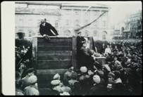
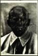
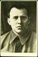
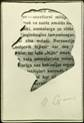

|  |
Дэвид Кинг, известный английский коллекционер, фотограф и дизайнер, занят своеобразным расследованием: он ищет следы деятелей советской эпохи, пропавших с опубликованных в сталинской России фотоснимков. Этому посвящен уникальный, снискавший мировую славу выставочный проект «Комиссар исчезает». История Советской России, начиная с ее революционной предыстории и заканчивая смертью Сталина, предстает рассказанной через призму фотографий и их позднейших искаженных и отретушированных копий. Двойная реальность сталинской эпохи как нельзя лучше отразилась в желании задним числом изменить запечатленное прошлое. Иногда оно выглядело слишком неприглядно, и его требовалось выправить и подчистить для парадной подачи. В других случаях в кадре оказывались лица, переведенные из ряда героев в списки врагов. Для официальных публикаций неугодных персонажей отрезали от общей группы, скрывали за ретушью и фотомонтажом. Такому изощренному государственному элиминированию вторили более простые действия рядовых советских граждан: от страха быть обвиненными в измене они вырезали и замарывали на фотографиях из своих личных архивов лица людей, вычеркнутых из официальной истории. |
«Мы любили обмакивать палец в чернильницу с сажей, разведенной в воде, и порой были в этом весьма старательны. Однажды я замазала самого товарища Кагановича. Я ликвидировала его, потому что фамилия у него была как у какого-нибудь отщепенца. Тогда мне было всего одиннадцать лет».
Сильва Даррел
«Нынче и с женой-то свободно поговоришь разве что ночью под одеялом».
Исаак Бабель
«Список делался все длиннее, перечень обреченных на сожжение книг все рос.
Нам пришлось сжечь даже книгу Сталина «Об оппозиции».
При новом руководстве даже ее надо было прятать».
Евгения Гинзбург
«Фальсификация документов в сталинское время обрела такие масштабы, что всю историю советской эпохи можно рассказать с помощью отретушированных фото. Именно такую цель преследует эта выставка».
Дэвид Кинг
| Дэвид Кинг - бывший арт-директор лондонского иллюстрированного журнала SundayTimes (1965-1975). С 1970-х гг. он собирает фотографии, полиграфию, периодику и книги советской эпохи. В настоящее время - независимый фотограф и дизайнер, обладатель одной из крупнейших частных коллекций советского искусства, автор и дизайнер фотоальбомов, посвященных истории Советского Союза и советским политическим деятелям: Trotsky. A Documentary (1972), The Great Purges (1984), Ordinary Citizens (2003), Red Star over Russia (2009) идр. Выставка «Комиссар исчезает» (TheCommissarVanishes) была создана Дэвидом Кингом в 1999 г. на материале собственной коллекции. Она экспонировалась в ведущих музеях в Вене, Милане, Берлине, Будапеште, Вашингтоне и приобрела мировую известность, как и изданный в 1997 г. фотоальбом (русский перевод опубликован в 2005 году под названием «Пропавшие комиссары»). |